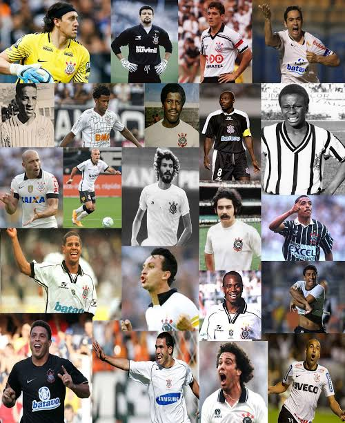

Maiores jogadores
Marcelinho Carioca, Sócrates e Cássio lideram as discussões sobre quem ocupa o topo da prateleira de maiores jogadores da história do Sport Club Corinthians Paulista. O clube centenário, conhecido como o "Time do Povo", foi moldado por atletas que uniram técnica refinada à raça e à identidade com a torcida alvinegra
